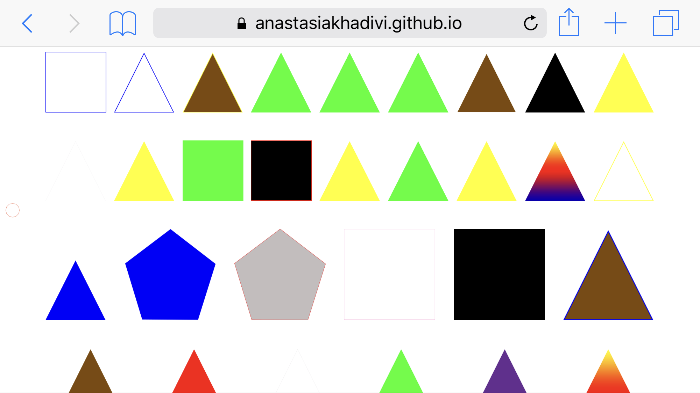

The collection I chose to represent for this project was a collection of everything I buy that then lives in my home. I decided to attract the items and represent them as four different shapes. The triangles represent all food/beverage items, the squares represent all household products, the polygons represent clothing and the circles represent anything bought for school. The color of the shape is determined by the color of the item and the stroke around the shape is determined by the color of the packaging. Hover states on the shapes reveals the name of the item is represents
The navigation is “hidden” on the page and is revealed when the small circle on the left side of the page is clicked. The collection can be organized alphabetically, by the user, the use, the color and the and size.
It is responsive and easy to use on different sized devices as well.